Forty years of European Capitals of Culture
I have studied the programme since 2002, from the long-term legacy of Glasgow 1990 to the baseline for Nikšić 2030: as a researcher, as director of Impacts 08, as member, chair and rapporteur of the European Commission's selection and monitoring panel, and now on the Culture Next Policy Task Force.
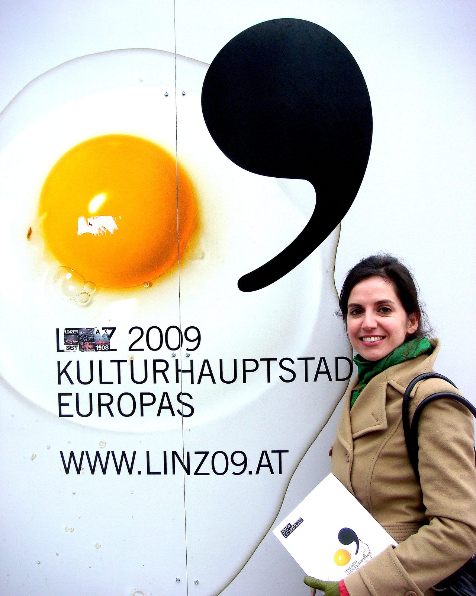
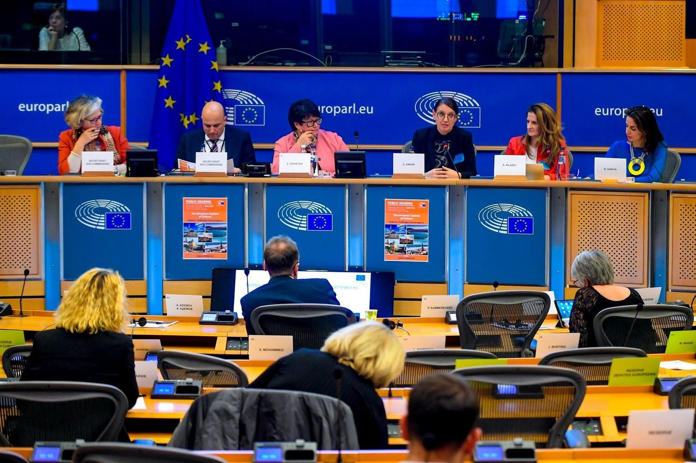
Why it matters
A year-long title with a decade-long test.
A European Capital of Culture is judged twice: by the panel that awards the title, and by what the city looks like ten years later. My research follows the whole arc, from the vision a city sets out, through the year itself, to the legacy.
Impacts 08, the programme I directed on Liverpool 2008, became the reference model for cultural impact evaluation. I went on to write the European Parliament's review of three decades of Capitals of Culture, to serve on the panel that selects and monitors them, and to chair the international board of Monitor 2024, assessing Bodø 2024.
Projects
The network, the cities, then the European institutions · newest first in each
| Place and years | What I did | What came of it |
|---|---|---|
| Network | ||
| Culture Next2023– | Lead expert, SDG Lab; now member of the Policy Task Force | Capital of Culture goals aligned with the UN Sustainable Development Goals · The SDG work |
| Cities | ||
| Nikšić 20302025– | Designing the Culturometer, the baseline framework | The baseline for Montenegro's first European Capital of Culture · About the Culturometer |
| Nova Gorica–Gorizia 20252024–2025 | Legacy report and workshop with the Italian and Slovenian teams of GO! 2025, for the skills2GO! programme with GECT GO | "Legacies of the European Capital of Culture programme: key factors", in skills2GO! Building Competences for Cultural Professionals (2025): how bid books plan for legacy, and what "going borderless" asks of GO! 2025 · Read the book |
| Bodø 20242024–2025 | Chair, international board of Monitor 2024, Nord University | Culture as Catalyst (2025), edited with A. Bourmistrov · Read the report |
| Liverpool 2008, ten years on2016–2019 | Principal investigator, Impacts 18 | Impacts 08 re-run a decade later, with an international symposium in 2018 · Impacts 18 |
| Liverpool 20082006–2010 | Director, Impacts 08 | The reference model for cultural impact evaluation, and more than 20 reports · Creating an Impact |
| Stavanger 20082008–2009 | Advisor to the International Research Institute of Stavanger | An article on the title's effect on innovation in arts production (2010) |
| Glasgow 19902002–2005 | Study of the long-term cultural legacies, Centre for Cultural Policy Research, University of Glasgow | "De-constructing the City of Culture", Urban Studies (2005) · The project |
| European institutions | ||
| European Commission2017–2022 | Member, chair and rapporteur, European Capital of Culture Selection & Monitoring Panel | Selection and monitoring of candidate and title-holding cities |
| European Parliament2013 | Principal investigator, three decades of Capitals of Culture | 60 cities reviewed, with 15 partners in five countries · Read the study |
| European Commission2009–2010 | Principal investigator, the Capitals of Culture Policy Group, with Stavanger, Linz, Turku, Marseille and Košice | An international framework of good practice in research and delivery · Read the framework |
| European Commission2004 | Academic advisor to Palmer/Rae Associates | The Study on European Cities and Capitals of Culture and the European Cultural Months (1995–2004), known as the Palmer Report |
Reports
Select a cover to read the report
Impacts 08 also published more than 20 specialist reports, from the 2007 baseline to media, tourism and the creative industries: those I wrote or edited are listed below. Impacts 08 in the archive
Policy and networks
Current roles first, then newest first
In the field
Editions, panels and networks, in preparation, title and legacy years.
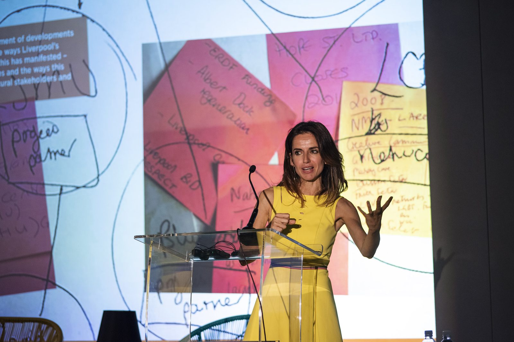
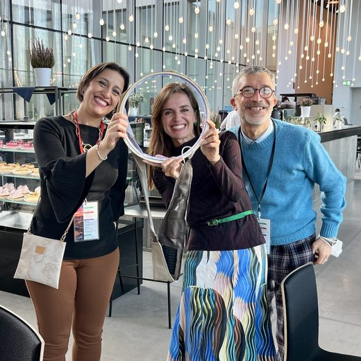
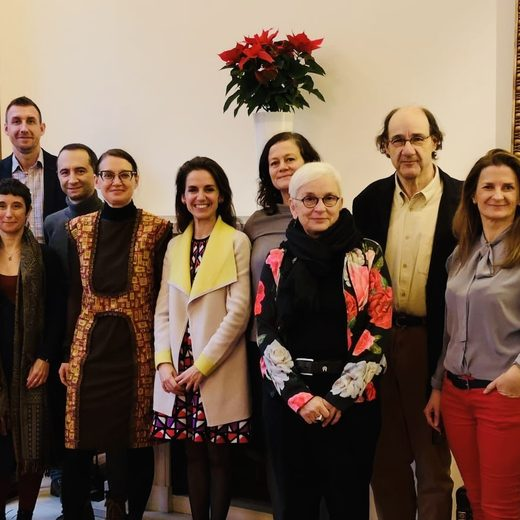
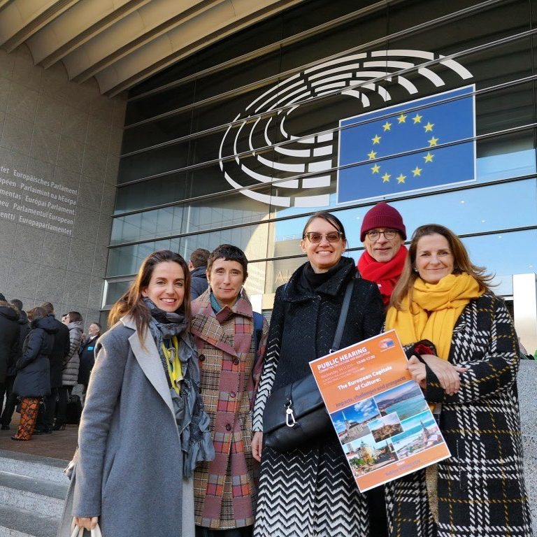
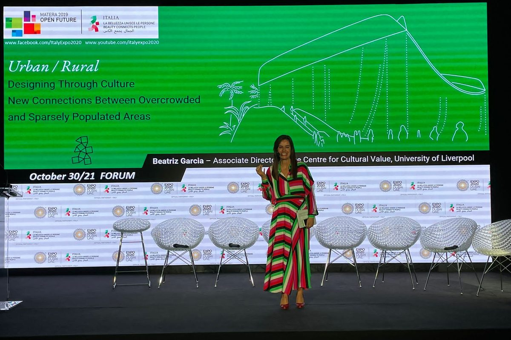
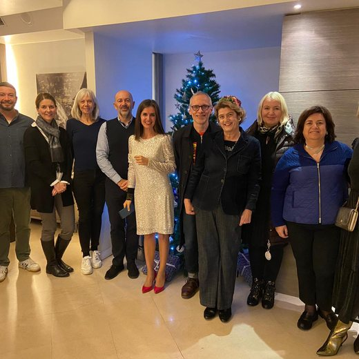
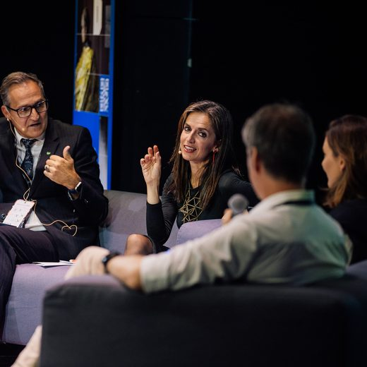
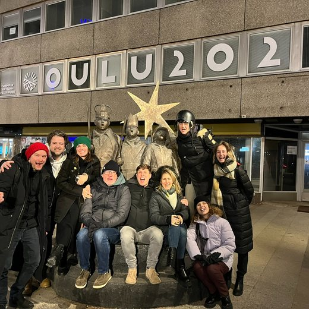
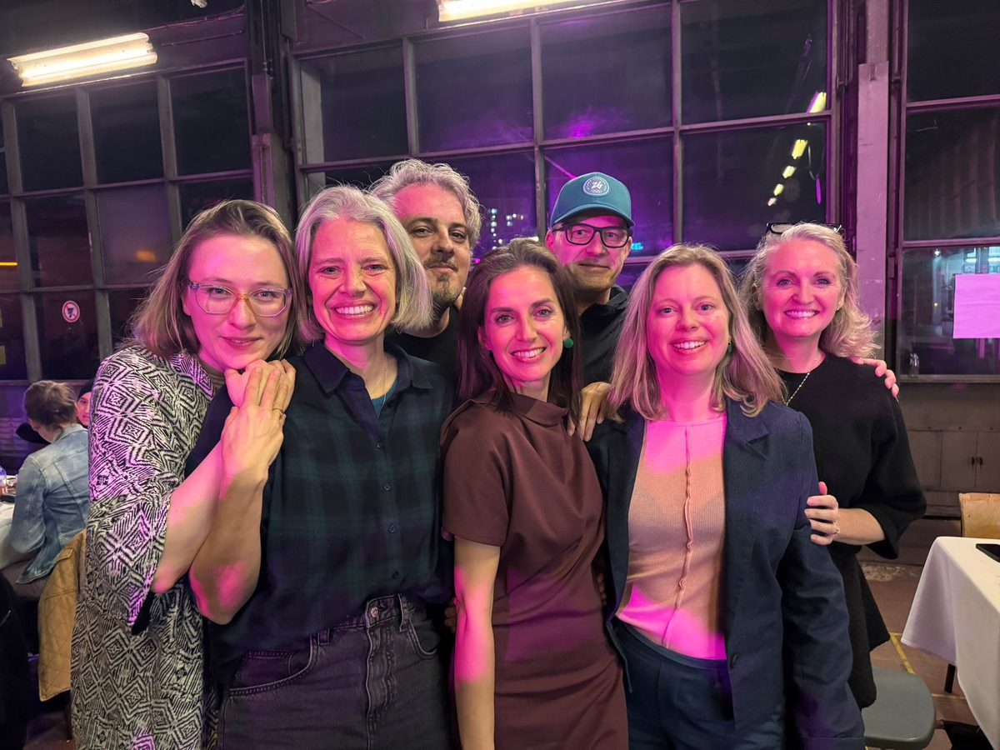
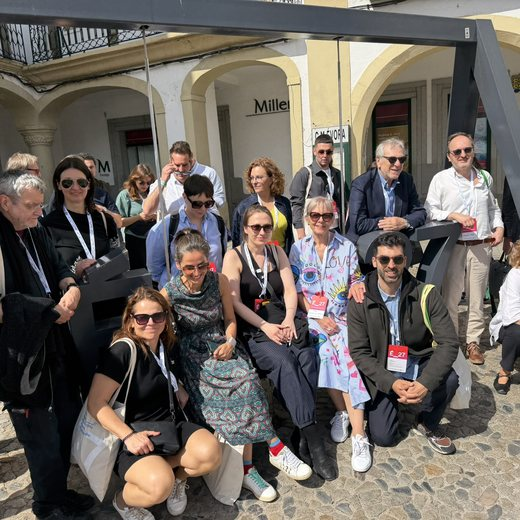
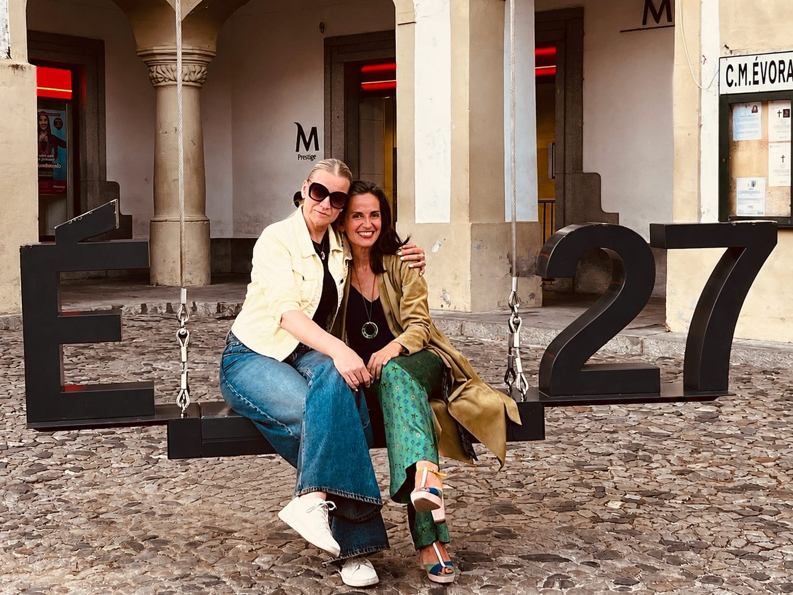
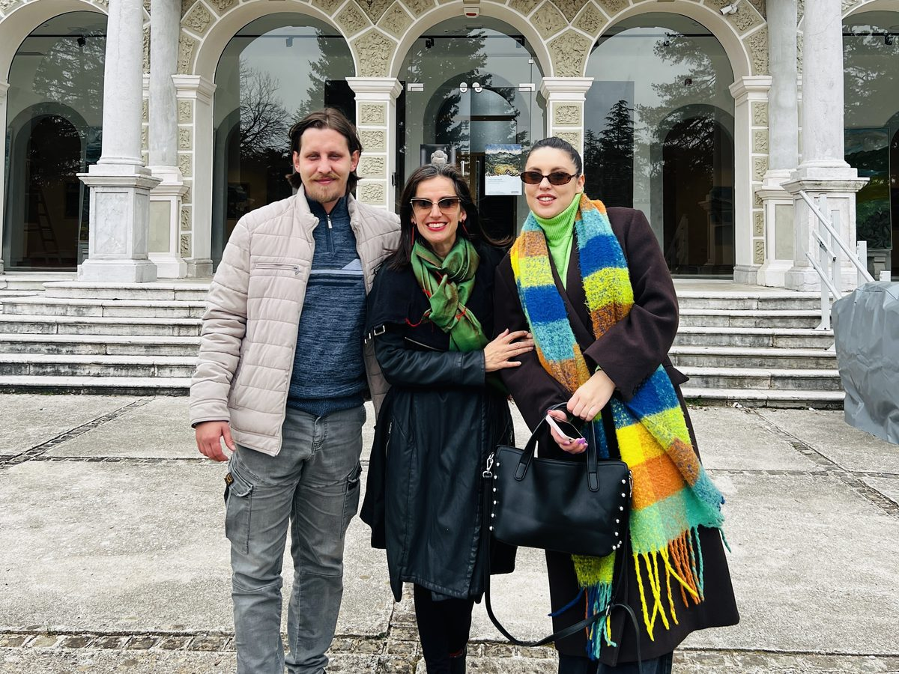
In the title year
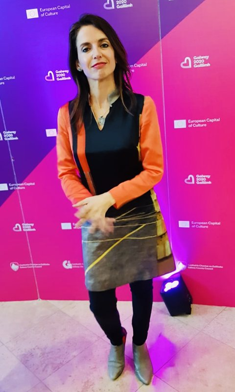
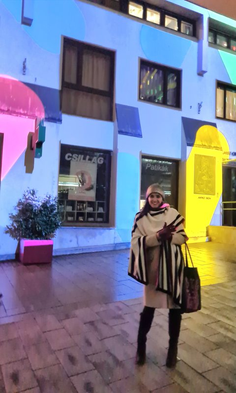
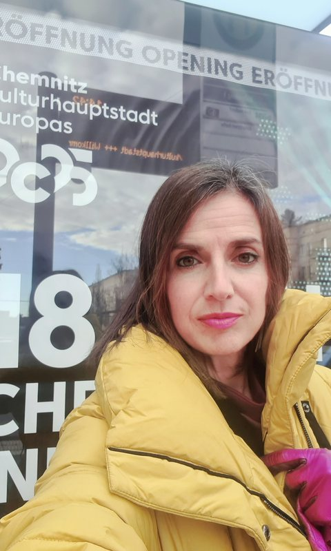
Publications on the Capitals of Culture
43 items, newest first in each group · links open the full text where one is online
Reports 10
- 2025Culture as Catalyst: Assessing Bodø2024 European Capital of Culture, edited with A. Bourmistrov. Monitor 2024, Nord University.
- 2013European Capitals of Culture: Success Strategies and Long-Term Effects, with nine technical appendices. European Parliament. Also in French and German.
- 2010An International Framework of Good Practice in Research and Delivery of the European Capital of Culture Programme, with the Capitals of Culture Policy Group. European Commission.
- 2010Creating an Impact: Liverpool's Experience as European Capital of Culture, with R. Melville and T. Cox. Impacts 08, University of Liverpool.
- 2010Media Impact Assessment (Part II): Evolving Press and Broadcast Narratives on Liverpool from 1996 to 2009. Impacts 08.
- 2009Core Messages: 2007 and Early 2008 Data, with R. Melville and T. Cox. Impacts 08.
- 2009Measuring the Impacts of Large Scale Cultural Events: A Literature Review, with F. Langen. Impacts 08.
- 2008Benchmark Indicators Report, with R. Melville and T. Cox. Impacts 08.
- 2007Impacts 08 Baseline Report, 2006/07, with R. Melville and P. Campbell. Impacts 08.
- 2006Media Impact Assessment (Part I): Baseline Findings on Liverpool Press Coverage before the European Capital of Culture. Impacts 08.
Impacts 08 reports edited 9
- 2010The Look of the City: The Impact of the Liverpool European Capital of Culture on the City's Public Realm, by I. Raymond.
- 2010Liverpool on the Map Again: Liverpool Stakeholders' Reflections on the Liverpool European Capital of Culture, by D. O'Brien, edited with T. Cox.
- 2009Liverpool 08, Centre of the Online Universe: The Impact of the Liverpool European Capital of Culture within Social Media Environments, by A. Miah and A. Adi.
- 2009Liverpool's Creative Industries: Understanding the Impact of the Liverpool European Capital of Culture on the City Region's Creative Industries, edited with T. Cox and R. Melville.
- 2009Local Area Studies: 2008 Results, by K. Rodenhurst, edited with T. Cox.
- 2008Local Area Studies: Baseline and 2007 Results, by K. Rodenhurst, edited with R. Melville.
- 2008Who Pays the Piper? Understanding the Experience of Organisations Sponsoring the Liverpool European Capital of Culture, by D. O'Brien.
- 2008Volunteering for Culture: Exploring the Impact of Being an 08 Volunteer, by K. Rodenhurst, L. Comerford-Park and R. Melville.
- 2007Re-telling the City: Exploring Local Narratives of Liverpool, by R. Melville, M. Selby and M. Cliff.
Journal articles 8
- 2016If everybody says so… Press narratives and image change in major event host cities. Urban Studies.
- 2010A cultural mega event's impact on innovative capabilities in art production: the results of Stavanger being the European Capital of Culture in 2008, with N. A. Bergsgard and K. Jøsendal. International Journal of Innovation and Regional Development 2(4).
- 2008Measuring the impact of major cultural events: a literature review, with F. Langen. Arts Research Digest 44.
- 2008Política cultural y regeneración urbana en las ciudades de Europa Occidental: lecciones aprendidas de la experiencia y perspectivas para el futuro. Revista de Investigaciones Políticas y Sociológicas 7(1).
- 2007Approaches to the newspaper archive: content analysis and press coverage of Glasgow's year of culture, with M. Reason. Media, Culture & Society 29(2).
- 2005De-constructing the City of Culture: the long-term cultural legacies of Glasgow 1990. Urban Studies 42(5/6).
- 2004Cultural policy and urban regeneration in Western European cities: lessons from experience, prospects for the future. Local Economy 19(4).
- 2004Urban regeneration, arts programming and major events: Glasgow 1990, Sydney 2000 and Barcelona 2004. International Journal of Cultural Policy 10(1).
Book chapters 5
- 2025Legacies of the European Capital of Culture programme: key factors, the legacy report for GO! 2025, Nova Gorica–Gorizia. In skills2GO! Building Competences for Cultural Professionals, F. Neri and A. Śmigiel (eds), pp. 43–60. Scuola nazionale del patrimonio e delle attività culturali.
- 2017The cultural policy of global events. In Routledge Companion to Global Cultural Policy, V. Durrer, T. Miller and D. O'Brien (eds). Routledge.
- 2015Capitals of culture and external projection. In El Llibre Blanc de la Cultura a Terrassa. Ajuntament de Terrassa.
- 2011Impacts 08, the Liverpool model: a framework for impact research in Liverpool, 2008 European Capital of Culture. In Osservare la cultura, A. Taormina (ed). Franco Angeli.
- 2004Reinventando Glasgow como Ciudad Europea de la Cultura: impactos en turismo cultural (1986–2000). In Casos de turismo cultural, J. Font (ed). Ariel.
Papers and presentations 4
- 2025European Capitals of Culture: what do we know? How do we know it? 40 years of data, soundbites and evaluation. Monitor 2024, Nord University.
- 2024Keynote on data in European Capitals of Culture, from the bid book to the legacy, and its role in tourism and local development. CulTourData final conference, Chemnitz · Watch the interview.
- 2010Researching the impact and legacy of a European Capital of Culture: the Liverpool experience. Celebrating 25 years of European Capitals of Culture, European Commission, Brussels.
- 2010Beyond Impacts: lessons and legacies from researching Liverpool's European Capital of Culture. Plenary, Impacts 08, Liverpool.
Essays and commentary 7
- 2026Forty years of ECoCs, and the networks that now hold them together. EcocNews.
- 2017Why Brexit should not stop UK cities from competing for European Capital of Culture. The Conversation.
- 2017Open letter from the experts nominated to the European Capitals of Culture selection panel, on the cancelled UK competition for 2023, co-signed with nine fellow experts. IETM.
- 2008Impacts 08, the Liverpool model: understanding the impact of culture-led regeneration in Liverpool, 2008 European Capital of Culture. Journal of the British Urban Regeneration Association.
- 2006Impacts 08, the Liverpool model: understanding the effect of cultural regeneration in the lead to Liverpool 2008. 8 Days a Week 1.
- 2006Cultural policy in European cities. In Shrinking Cities: Complete Works 2.
- 2003Glasgow lessons can help Liverpool. Regeneration & Renewal.
Impacts 08 published more than 20 further reports by its research team: all Impacts 08 publications. Archive lists: reports · journal articles · book chapters · magazines
Talks
Speaking →European Commission · European Parliament · Council of Europe · EU Council Presidency of Hungary · European Capital of Culture Forum, Kaunas · ECoC Family · Culture Next · CulTourData, Chemnitz · Monitor 2024, Nord University · European Network of Capitals of Culture · Aarhus 2017 legacy programme · European Capital of Culture Day, Expo 2020 Dubai
Most ECoC host cities since 2006, including preparation, event and legacy years. More on speaking.
Watch
- ECoCs as a catapult into the bigger pictureKultuurikompass, Tartu 2024 ↗
- Interview at the CulTourData final conferenceCultour Is Capital, Chemnitz 2024 ↗
- What happens next? Was it all worth it? The many faces of European Capitals of Culture legacyEuropean Capital of Culture Forum, Kaunas 2022 ↗
- Liverpool as European Capital of CultureVisitScotland National Events Conference, Gleneagles, 2019 ↗
In the media: Elle Italia on what the Capitals of Culture leave behind (2026), BBC Breakfast on Liverpool ten years on (2018), The Wall Street Journal (2008).
Writing
Euphoric Cities essays and posts from the archive, newest first
All Capitals of Culture posts in the archive · About Euphoric Cities
Shaping the vision and legacy of a European Capital of Culture?
From the first baseline to the legacy ten years on. Tell me what you are planning and when, in English, Spanish, Catalan or French.
Other research themes
All research →From Sydney 2000 to Milano Cortina 2026: how the Games use culture, and what it leaves behind.
Open the theme → Cities, placemaking and regenerationCulture-led regeneration, city branding and creative clusters.
Open the theme → Festivals and major eventsCommonwealth Games, Cities of Culture, festivals and their legacies.
Open the theme → Evaluation and cultural valueFrameworks for measuring what culture does, from Impacts 08 to the Culturometer.
Open the theme →